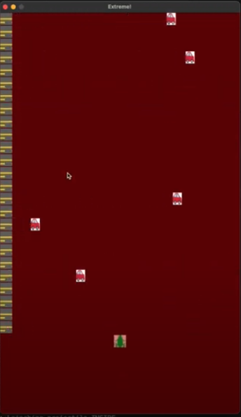

CS5850
Go to Doxygen

Download
Run with python3 game_builder_gui.py -m ./mygameengine.so
Watch Demo Video

Post-Mortem
Though my frogger/death dodging/survive as long as you can game is "complete" for the sake of this class, it is far from perfect.
Primary Limitations and Obstacles
-
Time: I originally started with a much larger and more complicated idea, but after hearing the TA's share they would suggest something much simpler, I abandoned that idea. However, I had already spent a good amount of time on that first idea, so I was left with an even shorter amount of time to work on this new project.
-
Lack of Understanding of the Environment: Several times throughout the project I was limited by my lack of understanding of things slightly outside the scope of Game Engines, but still used in this course. For example, when I was getting a seg fault I tried to use GDB but couldn't figure out how to get pybind to work with it. I decided to try to solve the seg fault with print statements, etc. Though this eventually worked, it was likely a huge time sink that could have been much more quickly solved if I had figured out how to use GDB with the pybind to c++ code.
Things that Went Well
-
Reusability of the Engine Developed: When I kept hearing that we just needed to make somewhat small changes to the engine in order to get a new game, I didn't fully believe / understand how that would work. I learned (and benefited) from the fact that it really was a small amount of code making the difference when a lot of the fundamental concepts (rendering, collision, etc) remained the same.
-
Fun Gameplay: It's not perfect, but while I was making the demo video I did catch myself playing it over and over trying to win faster. Whatever the "magic" thing that a game has that makes you want to keep playing and do better at it, I think my game has the seeds of that.
What I Would Do with Another Month
As much as I would like to list all of the super cool features I could add to my game, I would likely spend the time on polishing and adding small things that would improve user experience. For example, the bmp files I made that have the frog, car, street are low quality. I would also add more python scripting, since I really did the bare minimum for the project requirements. I would also do things like cleaning up the SDL_Log and maybe adding some text to the screen to tell the user they lost / won / their time, etc.